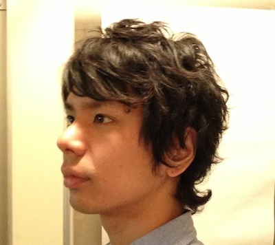

|  |
原田 敦 プログラマ 渋谷道玄坂にある日本シーエイダブリュウという会社のエンジニア。Ruby on Railsなどの高速フレームワークでWEBアプリケーション作ってます。 本当に必要なものだけつくるためにアジャイルな手法を実践、研究してます。エンジニアがもっと生き生きと仕事に向き合って、もっと活躍出来るような社会を目指してます。 三度の飯より小動物をもふもふするのが好き。週末の楽しみは一人お菓子パーティー。 もふもふ部（ブログ） http://blog.j-caw.co.jp/ もふもふ技術部（技術ブログ） http://j-caw.co.jp/blog/ |
|
橘 周世 プログラマ |